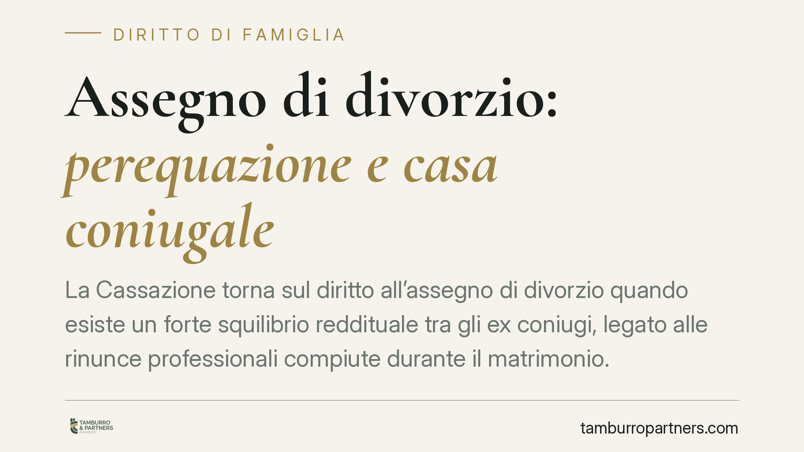

Assegno di divorzio: perequazione e casa coniugale
La Cassazione torna sul diritto all'assegno di divorzio quando esiste un forte squilibrio reddituale tra gli ex coniugi, legato alle rinunce professionali compiute durante il matrimonio. Né l'assegnazione della casa familiare né la presenza di risparmi personali escludono, di per sé, il diritto al contributo. Analizziamo il principio e le sue conseguenze concrete.

Il caso e il principio
Una recente pronuncia della Corte di Cassazione ha ribadito un orientamento ormai consolidato: in presenza di una rilevante sperequazione reddituale tra gli ex coniugi, riconducibile alle scelte compiute durante il matrimonio, può spettare l'assegno di divorzio anche quando il coniuge richiedente abbia ottenuto l'assegnazione della casa familiare o disponga di risparmi personali.
La vicenda riguardava due ex coniugi con redditi molto diversi: uno con posizione professionale consolidata, l'altro che aveva sacrificato le proprie prospettive di carriera per dedicarsi alla famiglia. La Corte ha chiarito che questi due elementi — casa e risparmi — non annullano automaticamente la funzione dell'assegno.
Inquadramento normativo
Il riferimento è l'art. 5, comma 6, della Legge 1° dicembre 1970, n. 898 (legge sul divorzio). La norma prevede che il giudice disponga l'obbligo di versare periodicamente un assegno quando un coniuge non disponga di mezzi adeguati o non possa procurarseli per ragioni oggettive.
Il punto di svolta interpretativo è rappresentato dalle Sezioni Unite della Cassazione (sentenza n. 18287 del 2018), che hanno superato il criterio del solo "tenore di vita matrimoniale" e hanno affermato la natura composita dell'assegno divorzile. L'assegno assolve tre funzioni integrate:
- assistenziale: garantire l'autosufficienza di chi non ha mezzi adeguati;
- compensativa: riconoscere il contributo dato alla vita familiare e al patrimonio comune;
- perequativa: riequilibrare le posizioni economiche quando il divario deriva dalle scelte condivise durante il matrimonio.
In questa cornice, le rinunce professionali — ad esempio aver lasciato o ridotto il lavoro per occuparsi della casa o dei figli — assumono un peso decisivo nella valutazione.
Implicazioni pratiche
È utile distinguere con chiarezza gli istituti, perché spesso vengono confusi.
L'assegnazione della casa familiare non è una forma di mantenimento. Serve a tutelare l'interesse dei figli a conservare l'ambiente domestico. Per questo non compensa automaticamente lo squilibrio reddituale tra i genitori e non esclude l'assegno divorzile.
Il mantenimento dei figli è un obbligo autonomo, che prescinde dai rapporti economici tra gli ex coniugi e segue regole proprie, legate alle esigenze della prole.
L'assegno divorzile riguarda invece il rapporto tra gli ex coniugi come tali. La presenza di risparmi personali non lo esclude in automatico: ciò che conta è se il richiedente disponga di mezzi *adeguati* e se il divario sia frutto di scelte comuni che hanno penalizzato la sua capacità reddituale.
In concreto: chi ha un reddito molto superiore non può limitarsi a far valere la casa assegnata all'altro o la presenza di qualche risparmio per sottrarsi al contributo. Il giudice guarda al quadro complessivo, con un'analisi caso per caso.
Cosa fare in concreto
- Ricostruite la storia economica del matrimonio. Raccogliete documentazione su carriere, redditi, interruzioni lavorative e scelte familiari: sono questi gli elementi su cui si fonda la funzione compensativa e perequativa.
- Tenete distinti gli istituti. Non confondete assegnazione della casa, mantenimento dei figli e assegno divorzile: hanno presupposti e finalità diversi.
- Documentate le rinunce professionali. Dimissioni, part-time, rinuncia a progressioni di carriera: conservate ogni prova del sacrificio compiuto e del suo nesso con le esigenze familiari.
- Valutate la propria posizione patrimoniale complessiva. Risparmi, immobili e capacità reddituale attuale vanno considerati nell'insieme, non come elementi isolati.
- Richiedete una valutazione professionale prima del contenzioso. Ogni situazione ha specificità proprie: consigliamo un'analisi preliminare degli estremi economici prima di assumere decisioni processuali.
Disclaimer
Contributo informativo a cura di Tamburro & Partners Avvocati – Avv. Giuseppe Tamburro. Non costituisce parere legale.
Ogni famiglia ha il suo equilibrio.
Separazione, divorzio, affidamento, assegno: se vuoi un confronto riservato su una specifica situazione, scrivi allo studio. Ti rispondiamo entro un giorno lavorativo.